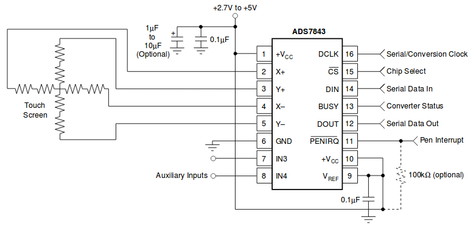

WF43BTIBED0 - TFT дисплей с функцией тач-скрин.
Обычно идет с контроллером ADS7843 или аналогом.
ADS7843 - 12 битный АЦП с устройством выборки-хранения (УВХ), синхронным последовательным интерфейсом и низкоомными ключами управления сенсорными контактами. Типовая потребляемая мощность равняется 750 мкВт при частоте дискретизации 125 кГц и напряжении питания + 2,7 В. Опорное напряжение (V Ref) может лежать в диапазоне от 1 В до +VCC, при этом динамический диапазон лежит в пределах от 0 до VRef. Устройство имеет дежурный режим, в котором потребление снижается до 0,5 мкВт. ADS7843 может работать при напряжении питания от 2,7 В до 5 В.
ADS7843 поставляется в 16 выводном SSOP корпусе и предназначен для работы в индустриальном температурном диапазоне от -40°C до +85°C.

One complete conversion can be accomplished with three serial communications for a total of 24 clock cycles on the DCLK input.
The first eight clock cycles are used to provide the control byte via the DIN pin.
When the converter has enough information about the following conversion to set the input multiplexer and reference inputs appropriately, the converter enters the acquisition (sample) mode and, if needed, the touch panel drivers are turned on. After three more clock cycles, the control byte is completed and the converter
enters the conversion mode. At this point, the input sample-and-hold goes into the hold mode and the touch
panel drivers turn off (in single-ended mode). The next 12 clock cycles accomplish the actual analog-to-digital conversion.
If the conversion is ratiometric (SER/DFR = 0), the drivers are on during the conversion and a 13th clock cycle
is needed for the last bit of the conversion result. Three more clock cycles are needed to complete the last byte (DOUT willbe low), which are ignored by the converter.